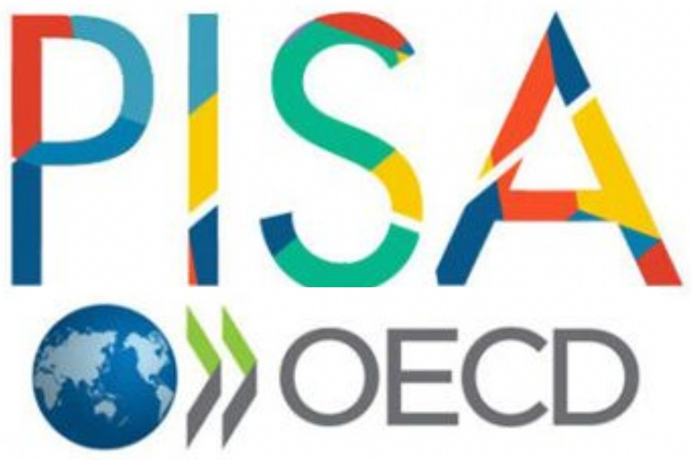
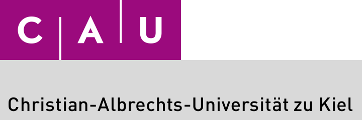

Importance
Argumentative competencies are central to participation in society
- Argumentation supports building one's own position.
- Argumentation competencies enable communication of one's own positions.

Supporting teachers' formative assessment, student motivation and learning with pedagogical AI.
Effective instruction requires continuous diagnosis, feedback, and guidance while students are developing their arguments.
They can make learning visible in the process and help teachers provide timely formative support.
Grant acquisition
Research question: How can teachers be trained to assess human-AI-written texts?
Teacher-side project on assessment training and diagnostic competence in German.
Start: end of 2026. Own share: EUR 344,650.
Grant acquisition
Aim: Transfer effective argumentation instruction in science into classrooms.
Own share: EUR 670,000.
Team from psychology, subject didactics, and computational linguistics.


Main effect of feedback

Grant acquisition
Aim: professionalization concepts for AI-based feedback systems and writing agents.
Project period: 2023-2025.
BMBF-funded. Own share: EUR 196,546.


Grant acquisition
Research question: How does generative AI affect learning and well-being?
Start: end of 2026.
Project volume: EUR 3,450,000. Own share: EUR 138,000.
Grant acquisition
Aim: investigate how individual primary students develop reading competencies. Start: autumn 2026.
Total project funding: EUR 880,000. Own share: EUR 220,000.
Current work · PISA Foreign Language Assessment



Target contribution


